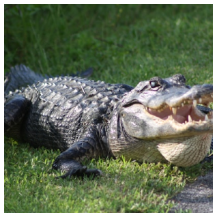

Animais
Os animais são recursos naturais essenciais para o equilíbrio dos ecossistemas e para a manutenção da biodiversidade no planeta. Eles desempenham papéis vitais em diversos processos ecológicos, como a polinização de plantas, a dispersão de sementes, o controle de populações de outras espécies e a decomposição de matéria orgânica. Além disso, os animais são fundamentais para os seres humanos, seja em termos de alimentação, medicamentos, companhia ou serviços ecológicos.
Em seus habitats naturais, os animais interagem de forma complexa com as plantas, outros animais e o ambiente ao seu redor. Por exemplo, muitos insetos, como abelhas e borboletas, são responsáveis pela polinização das plantas, o que possibilita a reprodução de diversas espécies vegetais. Animais predadores ajudam a controlar o número de presas, mantendo o equilíbrio das populações e evitando a superpopulação, que poderia levar ao esgotamento de recursos naturais.
Além dos benefícios ecológicos, os animais também são uma importante fonte de alimento para os seres humanos. Carne, leite, ovos e outros produtos derivados de animais são consumidos em diversas culturas ao redor do mundo. Além disso, muitos animais têm sido essenciais na medicina, seja pela produção de medicamentos, como insulina a partir de porcos, ou através de estudos científicos que permitem o desenvolvimento de tratamentos e vacinas.
No entanto, o uso dos animais pelos seres humanos deve ser responsável e sustentável. A caça ilegal, a destruição de habitats e a exploração excessiva de algumas espécies têm levado muitos animais à extinção, colocando em risco o equilíbrio ecológico global. A perda de biodiversidade afeta não só os animais, mas também as plantas e outros organismos, comprometendo a saúde do planeta como um todo. Por isso, a conservação e o respeito pelos direitos dos animais são questões cada vez mais urgentes.
A proteção da fauna, o combate ao tráfico ilegal de animais, a preservação de habitats naturais e o incentivo à criação de áreas de conservação são medidas necessárias para garantir que os animais possam continuar a desempenhar seus papéis vitais nos ecossistemas. Além disso, é fundamental promover uma relação mais ética e sustentável entre os seres humanos e os animais, garantindo que as futuras gerações possam desfrutar dos benefícios que esses seres vivos oferecem.